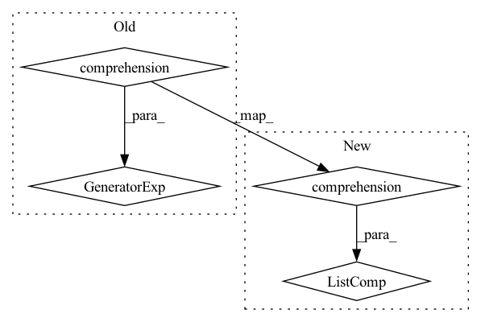

Pattern ID :1777
Before Change
self.post_pad = nn.ReflectionPad2d(3)
H0, W0 = input_dims[1:]
heights = (2**i for i in range(5,9))
widths = heights
H1, H2, H3, H4 = heights
W1, W2, W3, W4 = widths
After Change
self.post_pad = nn.ReflectionPad2d(3)
H0, W0 = input_dims[1:]
heights = [2**i for i in range(5,9)]
widths = heights
H1, H2, H3, H4 = heights
W1, W2, W3, W4 = widths
In pattern: SUPERPATTERN
Frequency: 3
Non-data size: 4
Instances Fragment ID: 4444690
Project Name: justin-tan/high-fidelity-generative-compression
Commit Name: 610055490ccb1df50737944a01a9af3a016d77ce
Time: 2020-07-30
Author: justan@student.unimelb.edu.au
File Name: models/network.py
M Class Name: Generator
N Class Name: Generator
M Method Name: __init__(7)
N Method Name: __init__(7)
M Parent Class: nn.Module
N Parent Class: nn.Module
M File Name: models/network.py
N File Name: models/network.py
M Start Line: 149
M End Line: 235
N Start Line: 150
N End Line: 237
Before Change
self.mask = Mask(erb_inv_fb, post_filter=p.mask_pf)
self.refinement_stages: List[SpectralRefinement]
self.refinement_stages = nn.ModuleList( // type: ignore
SpectralRefinement (kernel_size_t=2 if i == 0 else 1, dilation=i + 1)
for i in range(self.n_stages)
)
// SNR offsets on which each refinement layer is activated
self.refinement_snr_min = -10After Change
self.mask = Mask(erb_inv_fb, post_filter=p.mask_pf)
refinement_act = {"tanh": nn.Tanh, "identity": nn.Identity}[p.refinement_act.lower()]
self.refinement_stages = nn.ModuleList(
[
FreqStage(
in_ch=2,
out_ch=2,
out_act=refinement_act,
conv_ch=p.conv_ch,
num_freqs=p.nb_df,
hidden_dim=p.refinement_hidden_dim,
patch_size=2 ** (i + 1),
downsample_hprev=i >= 1,
)
for i in range(self.n_stages)
]
)
self.lsnr_net = LSNRNet(p.conv_ch * 2, lsnr_min=p.lsnr_min, lsnr_max=p.lsnr_max)
// SNR offsets on which each refinement layer is activated
self.refinement_snr_min = -10 Fragment ID: 4444687
Project Name: rikorose/deepfilternet
Commit Name: 656008165bd9057fda5faa2395f3b0a7d2f9f02a
Time: 2022-04-12
Author: h.schroeter@pm.me
File Name: DeepFilterNet/df/multistagenet.py
M Class Name: MSNet
N Class Name: MSNet
M Method Name: __init__(2)
N Method Name: __init__(2)
M Parent Class: nn.Module
N Parent Class: nn.Module
M File Name: DeepFilterNet/df/multistagenet.py
N File Name: DeepFilterNet/df/multistagenet.py
M Start Line: 243
M End Line: 248
N Start Line: 421
N End Line: 445
Before Change
self.asymmetric_pad = nn.ReflectionPad2d((0,1,1,0)) // Slower than tensorflow?
self.post_pad = nn.ReflectionPad2d(1)
heights = (2**i for i in range(4,9)) [::-1]
widths = heights
H1, H2, H3, H4, H5 = heights
W1, W2, W3, W4, W5 = widths After Change
self.asymmetric_pad = nn.ReflectionPad2d((0,1,1,0)) // Slower than tensorflow?
self.post_pad = nn.ReflectionPad2d(1)
heights = [2**i for i in range(4,9)] [::-1]
widths = heights
H1, H2, H3, H4, H5 = heights
W1, W2, W3, W4, W5 = widths Fragment ID: 4444686
Project Name: justin-tan/high-fidelity-generative-compression
Commit Name: 610055490ccb1df50737944a01a9af3a016d77ce
Time: 2020-07-30
Author: justan@student.unimelb.edu.au
File Name: models/network.py
M Class Name: Encoder
N Class Name: Encoder
M Method Name: __init__(6)
N Method Name: __init__(6)
M Parent Class: nn.Module
N Parent Class: nn.Module
M File Name: models/network.py
N File Name: models/network.py
M Start Line: 59
M End Line: 122
N Start Line: 65
N End Line: 125